1) What is the name of the following polyatomic ion? HSO3-
A) sulfate
B) sulfite
C) hydrogen sulfite*
D) hydrogen sulfate (bisulfate)
2) Calculate the formula mass for Sn(ClO3)2.
A) 285.6 amu*
B) 202.2 amu
C) 221.6 amu
D) 404.3 amu
To calculate the formula mass for Sn(ClO3)2, take the number of each element from the periodic table and multiply it by the formula mass of the element, then sum all the formula masses from each element. Sn: 118.71 amu x 1 = 118.71 amu Cl: 35.45 amu x 2 = 70.90 amu O: 16.00 amu x 6 = 100 amu Total: 285.6 amu
3) What is the empirical formula for a sulfur oxide (compound composed of sulfur and oxygen) that is 40.0% sulfur by mass?
A) SO3*
B) S3O
C) S2O
D) SO
Since the sulfur oxide compound is is 40.0% sulfur by mass, it will be 100% - 40.0% = 60.0 % oxygen by mass.
Assuming a 100 g sample gives us: 40.0 g sulfur and 60.0 g oxygen.
Next convert those grams to moles. 40.0 g S x \( \frac{1 mol S}{32.06 g S} \) = 1.25 mol S 60.0 g O x \( \frac{1 mol O}{16.00 g O} \) = 3.75 mol O
Then divide by the lower of the two mol amounts, and get the lowest whole number ratio.
4) What is the empirical formula for N2H6?
A) NH3*
B) N3H
C) N2H6
D) N2H3
An empirical formula represents the simplest ratio of elements present in a compound. It shows the relative number of atoms of each element in a compound without specifying the actual number of atoms. To get the empirical formula you need to divide the subscripts in the equation (N2H6) by their greatest common divisor. In this case 1 and 2 are divisible by 2, which gives NH3 as the empirical formula.
5) What is the name of the compound with the formula K2S?
A) Potassium (I) sulfide
B) Dipotassium sulfide
C) Potassium sulfide*
D) Potassium (II) sulfide
Since K is a fixed charge metal and K is a nonmetal, this is an ionic compound, and to name it we just need to write the name of the metal followed by the name of the nonmetal with an -ide ending. Thus the name of K2S is Potassium sulfide.
6) What is the formula for the compound sodium acetate?
A) Na2CO3
B) NaC2H3O2*
C) Na2C2H3O2
D) NaNH4
Sodium is a fixed charge metal and acetate is a polyatomic ion. Since sodium acetate contains a polyatomic ion, it is an ionic compound. Therefore, to get the formula you must balance the charges of the two ions. Sodium will carry a +1, whereas acetate will carry a -1 charge. The lowest common multiple of 1 and 1 is 1, therefore there will need to be 1 sodium ions and 1 acetate ions. That gives us a formula of: NaC2H3O2.
7) Give the name for P4O10.
A) Tetraphosphorus decoxide*
B) Phosphorus decoxide
C) Phosphorus (II) oxide
D) Phosphorus oxide
Both P and O are nonmetals, so we will need to put a Greek prefix before the name of each element, then give the second element an -ide ending. However, mono- is dropped from the beginning in cases where there is only 1 of the first element in the compound. Since there are 4 P and 10 O, the name is Tetraphosphorus decoxide.
8) What is the name of the acid H3PO4?
A) Phosphorous acid
B) Phosphoric acid*
C) Hydrophosphorous acid
D) Hydrophosphoric acid
9) What is the formula for the phosphate ion?
A) PO43-*
B) PO42-
C) PO33-
D) PO23-
10) Which of the following is the correct Lewis structure for Br ?
A) 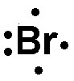
B) 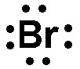
C) 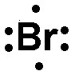
D) 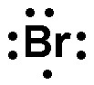*
Since Br is in the 7A group, it should have 7 valence electrons in its Lewis structure. Thus is the answer.
11) Calculate the molar mass for C6H12O.
A) 89.07 g/mol
B) 84.16 g/mol
C) 100.2 g/mol*
D) 29.02 g/mol
To calculate the molar mass for C6H10O, take the number of each element from the periodic table and multiply it by the molar mass of the element, then sum all the molar masses from each element. C: 12.01 g/mol x 6 = 72.06 g/mol H: 1.008 g/mol x 10 = 12.10 g/mol O: 16.00 g/mol x 1 = 16.00 g/mol Total: 100.2 g/mol
12) A double covalent bond contains how many electrons?
A) 4*
B) 5
C) 2
D) 6
A single covalent bond contains 2 shared electrons. A double covalent bond contains 4 shared electrons. A triple covalent bond contains 6 shared electrons.
13) Which of the following shows the best Lewis structure for N2H4?
A) 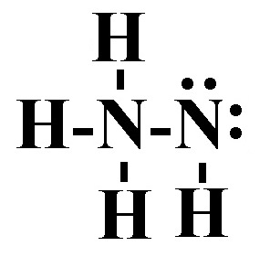
B) 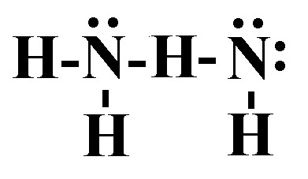
C) 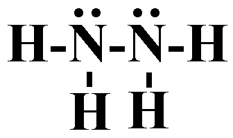*
D)
14) Which of the following bonds is least polar?
A) HBr
B) HCl
C) H-F
D) H-I*
The least polar bond will be the one with the smallest dipole moment.
The smallest dipole moment will be between the two elements that have the smallest difference in electronegativity. Generally speaking the elements with the smallest difference in electronegativity will be closest on the periodic table. However, you should remember that hydrogen has an electronegativity that is around that of metalloids. In other words, it is low for a nonmetal.
15) Identify the strongest bond.
A) Single covalent bond
B) Double covalent bond
C) Triple covalent bond*
D) All bonds are the same strength
Triple bonds are stronger than double bonds, which are stronger than single bonds.
16) Which of the following elements is the least electronegative.
A) Sodium
B) Iodine
C) Rubidium*
D) Chlorine
The trend for electronegativity is that it increases as you go up and to the right on the periodic table. However, noble gasses have an electronegativity of approximately zero, so fluorine has the highest electronegativity. Thus in this case, rubidium is the least electronegative.
17) Place the following bonds in order of increasing ionic character.
Si-P Si-Cl Si-S
A) Si-P < Si-Cl < Si-S
B) Si-P < Si-S < Si-Cl*
C) Si-Cl < Si-P < Si-S
D) Si-Cl < Si-S < Si-P
The bond with the lowest ionic character will be the between elements closest on the periodic table. Since Si and P are the closest on the periodic table, they will have the lowest ionic character. Since Si and S are the next closest, they will have the second to lowest ionic character. Si and Cl are the furthest on the periodic table, so they will have the largest ionic character.
18) Which of the following shows the best Lewis structure for BH3?
A) 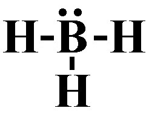
B)
C)
D) 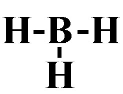*
19) Which of the following shows the best Lewis structure for XeF2?
A)
B) *
C)
D)
Xe has 8 valence electrons and F has 7 valence electrons. Xe (being below the 2nd period) can get more than an octet, but F needs an octet. The formal charges need to be as close to zero as possible. is the only structure with the correct number of electrons (8 + 7 + 7 = 22) where the formal charges on all elements is zero.
20) Which of the following shows the best Lewis structure for CH3OH?
A) 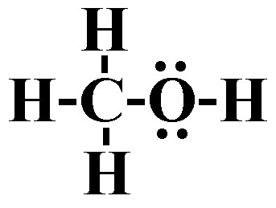*
B) 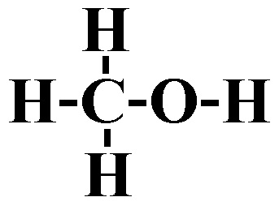
C) 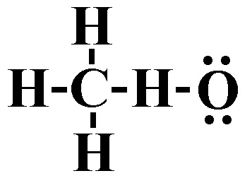
D) 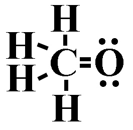
21) Which compound has the largest ionic character in the gas phase?
A) ClF
B) HF
C) LiF*
D) Cl2
The compound with the largest ionic character will be the one with the largest dipole.
The largest dipole moment will be between the two elements that have the largest difference in electronegativity. Generally speaking the elements with the largest difference in electronegativity will be furthest on the periodic table. However, you should remember that hydrogen has an electronegativity that is around that of metalloids. In other words, it is low for a nonmetal.
22) Which of the following shows the best Lewis structure for CH2Cl2?
A) 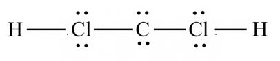
B) 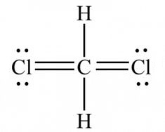
C) 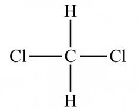
D) 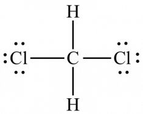*
Carbon has 4 valence electrons, hydrogen has 1, and chlorine has 7. Carbon and chlorine need an octet, and hydrogen needs a duet. is the only structure where there are the correct number of electrons (4 + 1 + 1 + 7 + 7 = 20), and where carbon and chlorine get an octet, and hydrogen gets a duet
23) What is the VSEPR shape (electron domain geometry) of PF3?
A) Trigonal planar
B) Bent
C) Linear
D) Tetrahedral*
Since the Lewis structure of PF3 has 4 electron domains, the VSEPR shape (electron domain geometry) of PF3 is tetrahedral.
24) Which of the following compounds is polar?
A) SiS2
B) IF5*
C) O2
D) PF5
IF5 is square planar shaped which is not a symmetrical shape, thus IF5 will be polar.
25) Is XeF4 polar or nonpolar?
A) Polar
B) Nonpolar*
Since XeF4 is square planar (which is a symmetrical shape), the electronegativities of the four fluorines balance out and XeF4 is nonpolar.
26) Use the molecular orbital diagram shown below to determine which of the following are the MOST stable.
A) OF2-
B) O2-
C) F22+*
D) NeF+
Step 1: Count the number of valence electrons in the molecule. F22+: 12 valence electrons O2-: 13 valence electrons NeF+: 14 valence electrons OF2-: 15 valence electrons Step 2: Fill in the molecular orbital diagram from the bottom up, but make sure to follow Hund's rule (one electron in each orbital in degenerate orbitals before a second with an opposing spin) when filling pi molecular orbitals. Step 3: Determine the bond order. Since after 10 valence electrons, the rest go into anti-bonding orbitals, the lowest number of electrons will have the highest bond order. Bond order = (electrons in bonding orbitals - electrons in antibonding orbitals)/2 Bond order for F22+: (8-4)/2 = 2 Bond order for O2-: (8-5)/2 = 1.5 Bond order for NeF+: (8-6)/2 = 1 Bond order for OF2-: (8-7)/2 = 0.5 Since F22+ has the highest bond order, it will be the MOST stable.
27) What is the hybridization on the central atom for XeF2?
A) sp3d2
B) sp2
C) sp3d*
D) sp
Step 1: Draw the Lewis Structure. Step 2: Count the number of electron domains: the number of lone pairs and number of atoms bonded to Xe. You should get 5 electron domains. 5 electron domains corresponds to sp3d hybridization.
# Electron domains
Hybridization
2
sp
3
sp2
4
sp3
5
sp3d
6
sp3d2
28) Is NHO polar or nonpolar?
A) Polar*
B) Nonpolar
Since NHO is bent (which is an asymmetrical shape), it will be polar.
29) What is the molecular shape of XeF4?
A) Square pyramidal
B) Octahedral
C) Square planar*
D) See saw (saw horse)
Since the Lewis structure of XeF4 has 6 electron domains, 2 of which are lone pairs, the molecular shape of XeF4 is square planar.
30) Give the molecular shape for KrF4
A) Linear
B) Square pyramidal
C) Tetrahedral
D) Square planar*
Step 1: Draw the Lewis Structure. Step 2: Count the number of electron domains: the number of lone pairs and number of atoms bonded to Kr. You should get 6 electron domains, of which 2 are lone pairs. 6 electron domains and 2 are lone pairs corresponds to a square planar molecular shape.
31) What is the molecular shape of BF3?
A) Linear
B) bent
C) Trigonal planar*
D) Tetrahedral
Since the Lewis structureof BF3 has 3 electron domains, none of which are lone pairs, the molecular shape of BF3 is trigonal planar.
32) Identify the number of electron groups (electron domains) around a molecule with sp hybridization.
A) 3
B) 4
C) 2*
D) 5
# Electron domains
Hybridization
2
sp
3
sp2
4
sp3
5
sp3d
6
sp3d2
33) Which orbitals overlap in the carbon-hydrogen bonds in C2H4?
A) Two p orbitals
B) sp3 and s
C) sp and s
D) sp2 and s*
Step 1) Draw the Lewis structure for C2H4. Step 2) Count the number of electron domains on one of the carbons. There are 3 electron domains on each carbon. Step 3) Determine the hybridization of one of the carbons. Since there 3 are electron domains, it is sp2 hybridized. Step 4) Since the hydrogens only have an s orbital, the bond is between a sp2 hybridized orbital and an s orbital, thus (sp2 and s) is the answer.
34) What is the molecular shape of H2O?
A) Tetrahedral
B) Trigonal pyramidal
C) Bent*
D) Trigonal planar
Since the Lewis structureof H2O has 4 electron domains, 2 of which are lone pairs, the molecular shape of H2O is bent.

 *
*